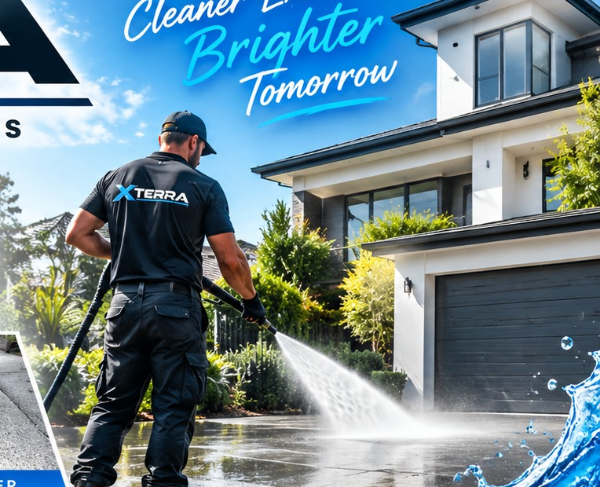
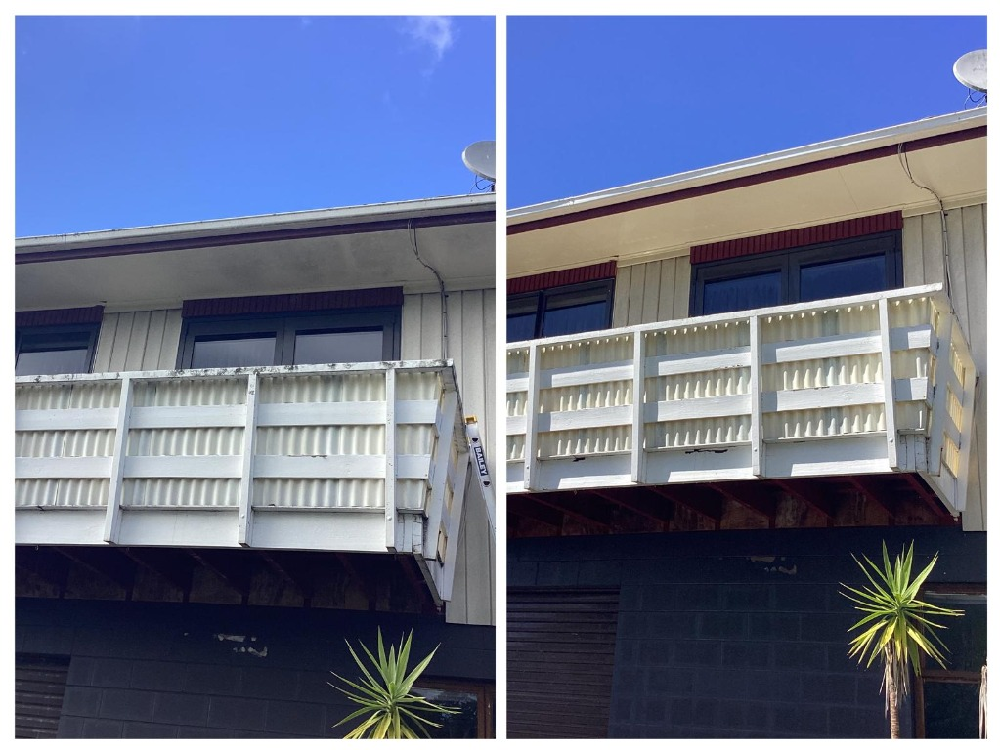

Before & after photo report
Every job finishes with a photo report emailed to you, so you can see the difference.
A streak-free, spot-free finish for homes and commercial buildings. We clean the frames, sills and tracks too, not just the glass, and send you a photo report of the result.
Window cleaning starts from $182 Get your free quote Starting price; final quote depends on the number, size and height of windows.
Dirty windows make even a freshly washed home look tired. We clean the glass, frames, sills and tracks so the whole window looks and works better, inside and out.
We clean homes, apartments, shopfronts, offices and multi-storey buildings across Auckland.
Here's what you get with XTERA that you won't always get elsewhere.
Every job finishes with a photo report emailed to you, so you can see the difference.
Not just the glass. We clean the whole window so there's no dirty frame spoiling clean glass.
Purified water leaves a clear finish that dries without streaks or marks.
Upper-storey windows cleaned from the ground, with no ladders leaning on your property.
Screens are cleaned too, so the finished window is fresh from every angle.
We take care of the area around your windows, inside and out, so we leave it tidy.
Cleaning products that are effective on glass and gentler on your garden and family.
Not happy with the result within 10 days? Let us know and we'll come back and re-clean the affected areas.
Review your job summary and accept the terms online through a secure link. No paperwork.
Weekends and after-hours available, handy for busy households and businesses that can't close.
Shopfronts, offices and multi-storey buildings cleaned to a consistent, professional standard.
Trained technicians who treat your property with care.
A simple, transparent process, so you always know what's happening.
Tell us about your windows and we'll provide a free, clear quote.
We check access, height, glass type and condition, and choose the method.
Floors, plants and surrounds are protected before we begin.
Glass, frames, sills and tracks cleaned for a streak-free finish.
Final inspection, then your before and after photo report by email.
From a single home to a commercial shopfront, tell us what needs cleaning and we'll plan the job to suit.

After every clean you get a before and after photo report, plus our 10 day clean guarantee.
Request a quoteGet the whole exterior fresh in one visit. Ask us to include any of these when you request your quote.
Walls and cladding cleaned to match your freshly cleaned windows.
Learn moreSoft wash roof cleaning with moss, lichen and algae treatment.
Learn moreGutters and downpipes cleared of leaves, moss and debris.
Learn moreSurface cleaning for driveways, footpaths and paving.
Learn moreWindows get dirty again, especially near the coast, busy roads and trees. A regular clean keeps them clear and makes every visit easier.
We service homes and commercial properties right across Auckland, including:
Tell us about your windows and we'll send you a clear, free quote. Window cleaning starts from $182.